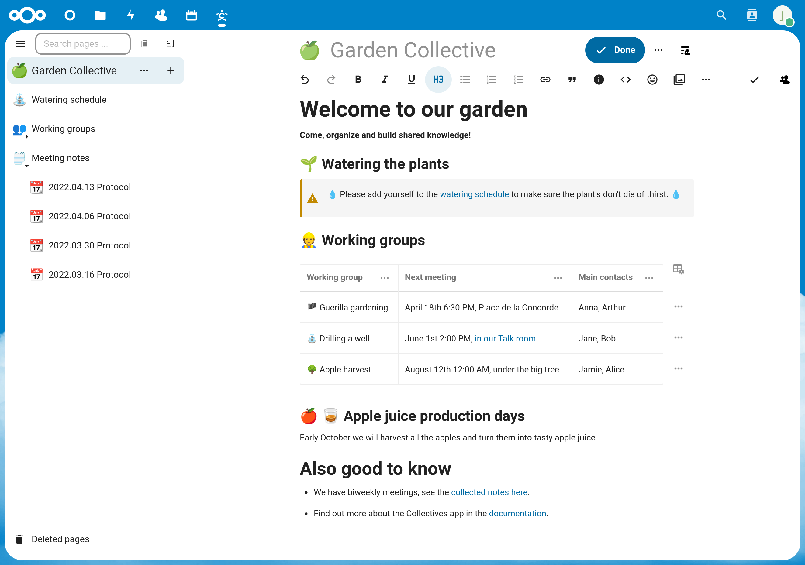
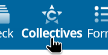

Erste Schritte
Betrachten Sie Kollektive (Collectives) als einen Raum, in dem ihr gemeinsam Notizen machen und online zusammenarbeiten könnt. Sie und Ihre Teammitglieder können zusammen Dokumente verfassen und Ihr gemeinsames Wissen strukturieren. Zudem lassen sich Aufgabenübersichten, Whiteboards und Kalender einbinden. Kollektive (Collectives) setzt auf horizontale und nicht-hierarchische Arbeitsabläufe.

Warum sollte ich die Kollektiv-App verwenden?
Sie benötigen ein Tool, um mit anderen zusammenzuarbeiten, gemeinsam zu arbeiten oder sich zu organisieren.
Sie möchten Ihr gesamtes geteiltes Wissen an einem Ort haben.
Sie wünschen sich einen schnellen und einfachen Überblick über Ihre Seiten und Unterseiten.
Sie möchten Teile des Wissens mit externen Personen teilen.
Sie verwenden Nextcloud bereits.
Erste Schritte
Sie erstellen Ihr erstes Kollektiv (Collective) mit zwei Seiten, die durch einen Link miteinander verbunden sind. Bitte beachten, dass Collectives in einem Desktop-Browser geöffnet werden müssen (nicht auf einem Mobilgerät).
Wählen Sie die Collectives-App im App-Menü oben aus:

Auf „Neues Kollektiv“ klicken.
Geben Sie den Namen
Mein erstes Kollektivein und wähle ein Emoji aus (oder behalte das vorausgewählte bei).Wählen Sie “Ohne Mitglieder erstellen“ aus. Wir erfahren später, wie weitere Mitglieder hinzugefügt werden können.
Klicken Sie in der Seitenliste auf der linken Seite auf die ➕-Schaltfläche neben der Landingpage. Herzlichen Glückwunsch – Sie haben gerade die erste Seite in Ihrem Collective erstellt! 🎉
Geben Sie der Seite einen Titel, indem Sie
Meine erste Seiteeingeben.Drücken Sie nun Enter, und der Cursor springt zum (noch leeren) Seiteninhalt.
Geben Sie
## Meine erste Überschriftein, um eine Überschrift der zweiten Ebene einzufügen. Alternativ können Sie das Überschriften-Menü in der Editor-Symbolleiste öffnen, “Überschrift 2“ auswählen und anschließendMeine erste Überschrifteingeben. Sie haben gerade gelernt, dass es mehr als eine Möglichkeit gibt, Text zu formatieren 🎉Erstellen Sie eine Unterseite von “Meine erste Seite“, indem Sie in der Seitenleiste auf die Schaltfläche ➕ neben “Meine erste Seite“ klicken. Die Schaltfläche erscheint erst, wenn Sie den Mauszeiger über den entsprechenden Eintrag in der Seitenliste bewegen.
Geben Sie der Unterseite einen Titel, indem Sie “Meine Unterseite“ eingeben.
Fügen Sie einen Link zur ersten Seite hinzu, indem Sie in der Editor-Symbolleiste das Menü Link (🔗-Symbol) öffnen und Link zur Seite auswählen. Es öffnet sich ein Dialogfenster zur Auswahl der Seite. Geben Sie
erstein das Suchfeld ein; daraufhin erscheintMeine erste Seite. Klicken Sie darauf, um die Seite als Link-Vorschau einzufügen.

Herzlichen Glückwunsch – Sie haben zwei wichtige Grundlagen für die Arbeit mit Collectives kennengelernt: wie man Seiten erstellt und miteinander verknüpft sowie wie man Inhalte auf einer Seite formatiert.
Was kommt als nächstes
Um zu erfahren, wie Sie Collectives in Ihrem Team nutzen können, lesen Sie So führen Sie Ihr Team ein.
Eine Übersicht über die Funktionen finden Sie hier.